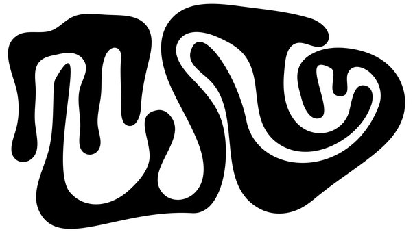
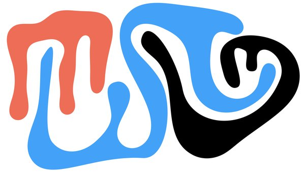
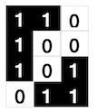
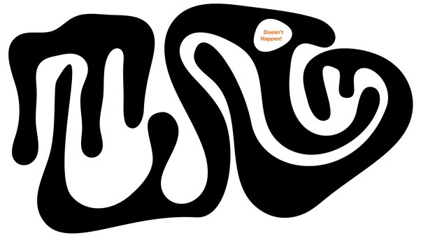
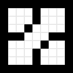
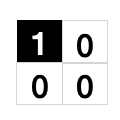
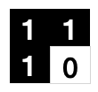
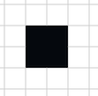
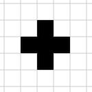
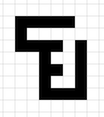

What are some programming problems that look hard at a first glance but are actually easy?
Here’s a black and white image.

It is represented, as you’d expect, as an array of bits: 0 is white, 1 is black. Your programming challenge is to determine the number of connected components in such an image. In this example, there are three of them:

You’re not required to color them in! I’m just clarifying what I mean by “connected component”.
You can make the following assumptions. The black pixels of a component share an edge, not just a corner. Assume that this:

doesn’t happen. Connected components are strongly connected (their pixels share an edge), and different components don’t touch even in pixel corners. With a hi-res image like the example above those are very natural assumptions (Note: in an earlier version of this answer I was too lax here. Corrected now.)
Another simplifying assumption you can make is that there are no holes. The “blobs”, the connected components, are whole and filled in. Such blobs are called simply connected.

Finally, you may assume that the exterior border of the array is all white. If not, you can just zero-pad it.
So:
- Input: array of bits, representing an image with simply connected components.
- Output: an integer representing the number of components.
- GO!
This is actually an important and useful algorithmic problem. Versions of it are needed, for example, in science and engineering to count objects in industrial, biological or medical images.
So, how would you go about this?
Almost anyone who attempts this does the most natural thing: Flood Fill. Scan the image, find a black pixel, start crawling its neighbors and their neighbors and so on, marking the pixels you’ve found along the way. When you get stuck, backtrack to a previous black pixel which still has unprocessed neighbors, and continue until you’ve completed a blob. Add 1 to the count of blobs. Start over.
Here’s a quick animation (from the loc. cit. Wiki page) of a flood fill algorithm filling a white blob on a black background.

This is not a terribly difficult algorithm, but it’s not straightforward either. The Wikipedia article shows various versions, including a fairly optimized one with some 100 lines of pseudocode. See also Connected-component labeling for more on this approach.
(Naturally, the code golfers have addressed the problem, but as you can see even they couldn’t get it down to their usual 9-byte Jelly programs. Except for the guy who cheated with Matlab’s imfill, the solutions are hundreds of bytes of dense code.)
But remember, I didn’t ask you to flood-fill anything, nor to label the blobs. We just want to count. Is there an easier way?
Yes, there is, a fantastically simple and easy way. It lets you count the number of connected components in the simply connected case, and in fact it works more generally: it counts the number of components minus the number of holes. If we assume no holes, as we did, then you simply get the number of blobs.
Here’s the complete algorithm.
Set a counter to 0. Scan the entire image, once, looking at 2 \times 2 pixel windows anchored at each pixel. Add 1 to the counter every time you see this (a “dot”):

Subtract 1 every time you see that (a “T”):

Done. The counter has the number of connected components.
Yes, really. No queues, no stacks, no recursion, no backtracking, no forest fire fills, no labeling, nothing. Just a dead-simple, linear, one-time pass through the array, and counting two simple combinations of pixels.
If this is the input:

You’ll catch one +1 and no subtractions. Output: 1. Check.
If this is the input:

You’ll count two +1's and one -1. Output: 1. Check.
Here’s a more complicated example:

There are 4 +1's here and 3 -1's. Output: 1. Check.
The local nature of the algorithm makes it quite clear that if it works for single blobs, it works for any number of blobs. Indeed, it is additive under superpositions. Overlay two disjoint blobs and the algorithm will simply accumulate the results from each independent one.
This algorithm is an instance of something truly deep and profound: the local-global behavior of the Euler characteristic. In simple words, if you have local geometric data and you’re interested in global features, take an alternating sum. In our case, “dots minus T’s” is the same as “components minus holes”. The very same idea lies behind deep results like the Lefschetz fixed point theorem and the Gauss–Bonnet theorem.
We’ll have to save a complete proof to another answer, but I would submit that this is an amazing instance of a seemingly challenging algorithmic problem which turns out to have a ridiculously simple solution.